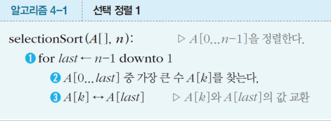
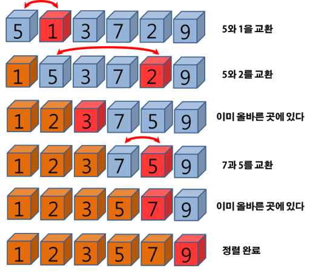
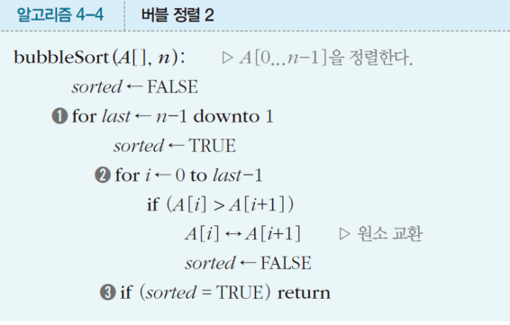
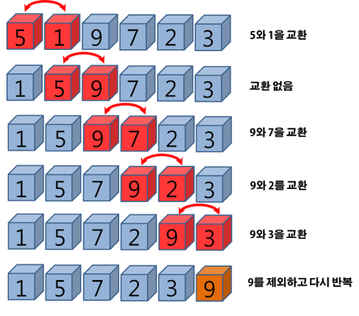
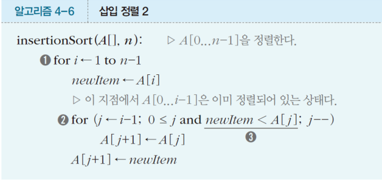
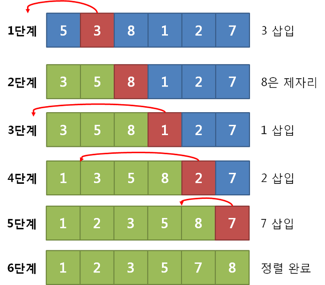
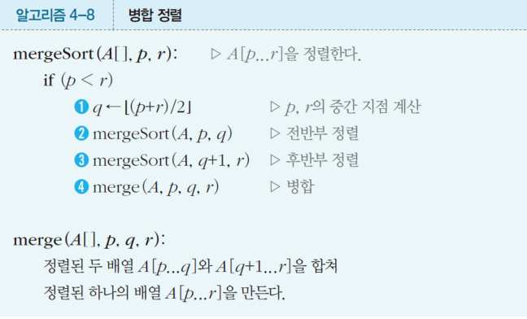
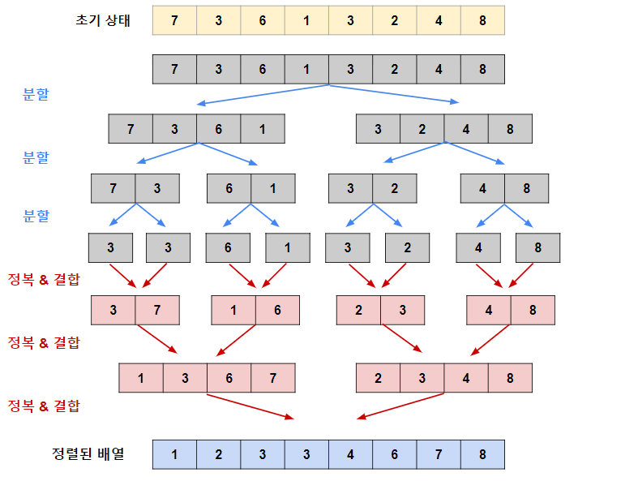
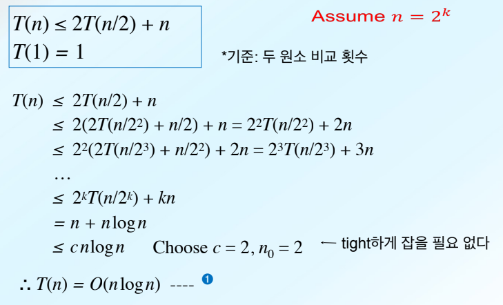

선택 정렬은 가장 직관적이고 구현하기 쉬운 정렬 알고리즘이다.
'선택'이라는 말 그대로 현재 위치에 들어갈 데이터를 선택하여 넣는다.
1. 주어진 리스트에서 최솟값을 찾는다.
2. 최솟값을 리스트의 맨 앞에 위치한 값과 교체한다.
3. 맨 처음 위치를 제외한 나머지 리스트를 순환한다.
4. 리스트의 끝에 도달하면 정렬이 완료된다.

| 시간 복잡도 | 최선 | 평균 | 최악 |
|---|---|---|---|
| 시간 | $O(n^2)$ | $O(n^2)$ | $O(n^2)$ |
데이터 상태와 무관한 성능을 띄고 있다.
배열이 이미 정렬되어 있든, 역순으로 정렬 되어 있든
항상 처음부터 끝까지 비교를 수행하므로 연산 횟수가 동일하다.
$\Theta$ (빅-세타)나 $O$ (빅-오) 표기법은 $n$이 무한히 커질 때 증가율을 확인하므로
1. 가장 빠르게 커지는 최고차항만 남기고 하위 항은 무시한다.
2. 최고 차항에 붙어있는 상수를 제거한다.
그러므로 시간 복잡도는 모두 $O(n^2)$가 나온다.
def selectionSort(A, n):
for last in range(n-1,0,-1):
largest = 0
for i in range(1, last+1):
if A[largest] < A[i]:
largest = i
A[last], A[largest] = A[largest], A[last]

버블 정렬은 이름에서 그 동작 방식을 유추 할 수 있다.
거품이 위로 떠오르듯이 서로 인접한 두 개의 데이터를 비교하여, 위치를 변경한다.
가장 큰 데이터가 마치 거품처럼 배열의 맨 끝으로 올라오는 것 이다.
[5, 3, 8, 1, 2]를 예시로,
[5, 3]을 비교하여 5가 크므로 교환 [3, 5, 8, 1, 2]
[5, 8]을 비교하여 8이 크므로 유지 [3, 5, 8, 1, 2]
[8, 1]을 비교하여 8이 크므로 교환 [3, 5, 1, 8, 2]
[8, 2]를 비교하여 8이 크므로 교횐 [3, 5, 1, 2, 8]
이런식으로 인덱스를 순환하며 차례대로 큰 수를 끝으로 밀어넣는다.

| 시간 복잡도 | 최선 | 평균 | 최악 |
|---|---|---|---|
| 시간 | $O(n)$ | $O(n^2)$ | $O(n^2)$ |
버블 정렬은 선택 정렬과 달리 값이 같은 데이터가 있을 때,
정렬 전 후로 상대적인 위치가 변하지 않는다. 두 값이 완전히 클 때만 바꾸기 때문이다.
교환 연산은 컴퓨터 입장에서 꽤 무거운 작업으로,
$O(n^2)$ 알고리즘 중에서도 가장 성능이 떨어지는 편에 속하여 상용에선 쓰이지 않는다.
알고리즘의 수행 시간은
$(n-1) + (n-2) + (n-3) + \dots + 2 + 1$로 선택 정렬과 동일하나,
[1, 2, 3, 4, 5]과 같은 최선의 경우에는 단 한번도 자리 교환이 일어나지 않고,
1번의 비교연산 순환으로 정렬을 완성하므로 최선에서의 시간 복잡도는 $O(n)$ 가 된다.

삽입 정렬은 우리가 손에 쥔 카드 패를 정렬하는 방식과 같다.
새로운 카드를 한장씩 집어 들고, 이미 정렬되어 있는 카드들 사이에서 알맞은 위치를 찾아 삽입한다.
배열 [5, 3, 8, 1, 2]를 정렬 할 때,
핵심은 이미 정렬된 부분과 아직 정렬되지 않은 부분으로 나누어 생각한다.
정렬을 시작 할 땐 맨 앞의 원소 하나 5만 정렬된 부분으로 간주한다.
[5 | 3, 8, 1, 2] ( | 왼쪽은 정렬된 부분, 오른쪽은 정렬되지 않은 부분)
정렬되지 않은 부분의 첫번 째 값을 집어든다. (3) 우리는 이를 key라고 부른다.
정렬된 부분의 5와 비교하여, 3이 더 작으므로 5을 오른쪽으로 밀어내고 그 자리에 3을 삽입한다.
[3, 5 | 8, 1, 2]
8을 집어 든 후, 정렬된 부분의 가장 오른쪽 값인 5와 비교하여, 8이 더 크기 때문에 현재 위치에 둔다.
[3, 5, 8 | 1, 2]
1을 집어 든 후, 3,5,8을 오른쪽에서 왼쪽으로 훑으며 비교하여 1을 맨 앞에 삽입한다.
[1, 3, 5, 8 | 2]
마지막 값 2를 집어 든 후, 8,5,3을 한 칸씩 밀어내고 1보다는 크므로 그 뒤에 삽입한다.

귀납적 확신
배열에서 A[0...k]까지 정렬되어 있다면,
A[0...k]에서 i를 적합한 자리에 넣어주기만 한다면 A[0..k+1]까지 정렬된다.
| 시간 복잡도 | 최선 | 평균 | 최악 |
|---|---|---|---|
| 시간 | $O(n)$ | $O(n^2)$ | $O(n^2)$ |
삽입 정렬의 경우 배열이 이미 정렬되어 있다면,
각 회전마다 바로 왼쪽의 원소와 1번만 비교하고 다음 원소로 넘어가기에 총 n-1번 연산한다.
최악의 경우에는 매번 삽입시 정렬된 부분의 모든 원소와 비교하고 밀어내야 하므로
연산 횟수는 1+2..+(n-1)이 되어 앞의 두 정렬과 동일하다.
앞서 정렬들은 평균적으로 $Θ(n^2)$의 시간이 소요되는 기초적인 정렬 알고리즘이었다.
앞으로 나올 병합, 퀵, 힙 정렬은 평균 $Θ(n\log(n))$의 시간이 소요된다.

Divide and Conquer 참고
병합 정렬은 폰 노이만이 고안한 알고리즘으로,
거대한 문제를 한 번에 해결하는 것이 아닌, 작은 단위로 쪼개어 해결하고 합친다.
배열 [38, 27, 43, 3, 9, 82, 10]를 정렬한다고 가정하면,
[38, 27, 43, 3], [9, 82, 10]
[38, 27], [43, 3], [9, 82], [10]
[38], [27], [43], [3], [9], [82], [10]
배열의 원소가 단 1개가 될 때 까지 쪼갠다.
[27, 38], [3, 43], [9, 82], [10]
[3, 27, 38, 43], [9, 10, 82]
[3, 9, 10, 27, 38, 43, 82]
이제 인접한 두 배열의 가장 작은 원소들을 비교하며, 정렬하며 쌓아 합친다.

| 시간 복잡도 | 최선 | 평균 | 최악 |
|---|---|---|---|
| 시간 | $\Theta(n \log n)$ | $\Theta(n \log n)$ | $\Theta(n \log n)$ |
점화식으로 시간 복잡도를 풀어보면,

$T(1) = 1$ : 데이터가 1개 일 때에는 비교할 필요 없이 정렬된 것으로 본다.
$T(n) \le 2T(n/2) + n$ 데이터가 $n$개일 때 걸리는 시간 $T(n)$은,
데이터를 절반$(n/2)$으로 나눈 부분 배열 2개를 정렬하는 데 걸리는 시간 $2T(n/2)$에
나뉜 배열을 다시 하나로 병합하는 n번의 비교 연산을 더한 것과 같거나 작다.
$k = \log_2(n)$일 때,
$n/2^k = 1$
$2^k = n$
$kn = \log_2(n)n$ 즉, $n\log(n)$
해당 식을 Big-O표기법을 사용해 표현하면,
최고차항 $n + n \log n \le cn \log n$ 를 만족함으로,
$ T(n) = O(n \log n)$이다.
병합 정렬은 엄청나게 빠르고 안정적이지만,
앞서 단계별 예시에서 봤듯이, 데이터를 병합하기 위해 원본 배열과 같은 추가 메모리 공간이 필요하다.
위의 표와 같이 일관되게 빠른 속도를 보장함에도 불구하고, 메모리 공간 문제라는 단점이 있다.